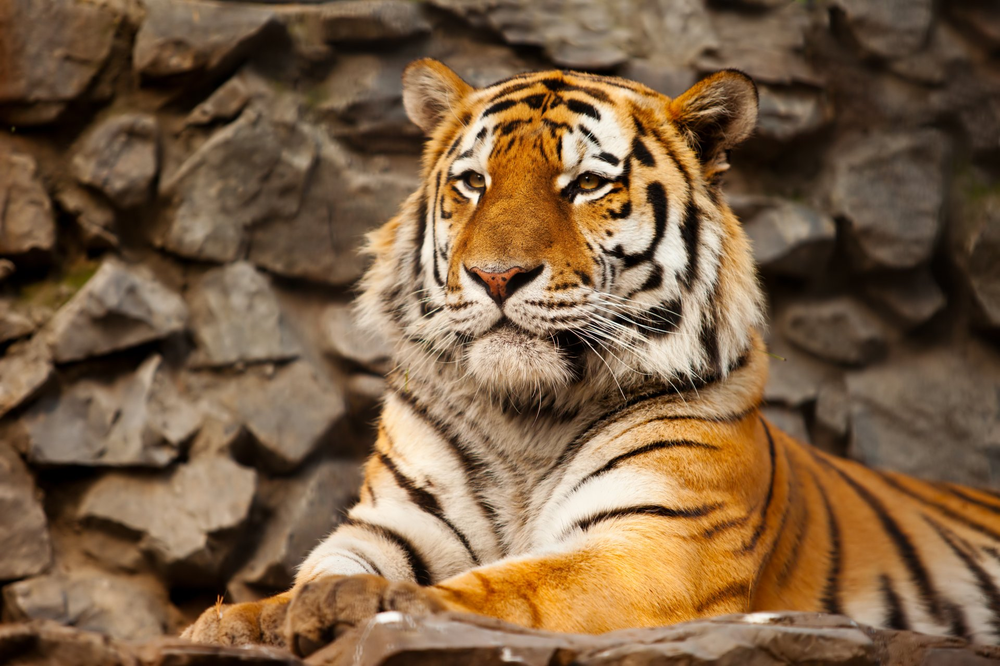

Тигр[5] (лат. Panthera tigris) — хищное млекопитающее семейства кошачьих, один из пяти видов рода пантер, принадлежащего к подсемейству больших кошек. Слово «тигр» происходит от др.-греч. τίγρις, которое в свою очередь восходит к др.-перс. *tigri от корня «*taig» со значением «острый; быстрый»[6][7][8]. Среди представителей этого вида встречаются крупнейшие животные семейства кошачьих. Тигр является одним из крупнейших наземных хищников, уступая по массе лишь белому и бурому медведям. Выделено два современных подвида тигра, включающих девять популяций, из которых к началу XXI века сохранились лишь шесть[4]. Общая численность составляет порядка 4000—6500 особей[9]. Самой многочисленной является популяция бенгальского тигра, составляющая около 40 % от всей популяции тигров. В XX веке внесён в Красную книгу МСОП, в Красную книгу России, а также в охранные документы других стран. По состоянию на 2020 год охота на тигров запрещена во всём мире. Содержание 1 История изучения 2 Филогения 3 Внешний вид 4 Распространение 5 Подвиды 5.1 Ископаемые подвиды 6 Гибриды 7 Цветовые вариации окраски 7.1 Белый тигр 7.2 Золотой тигр 7.3 Прочие вариации 8 Биология и экология 8.1 Территориальное и социальное поведение 8.2 Питание 8.3 Охота 8.4 Взаимодействие с другими хищниками 8.5 Размножение 9 Статус популяции 10 Охрана 10.1 Охрана в России 11 Изучение в природе 12 Тигр и человек 12.1 Охота на тигров 12.2 Содержание в неволе 12.3 Тигры-людоеды 12.4 Китайская традиционная медицина 12.5 Мифология, легенды и символизм 12.6 Изобразительное искусство 12.7 Литература 12.8 Кино и музыка 13 См. также 14 Примечания 14.1 Комментарии 14.2 Источники 15 Ссылки
 Главная